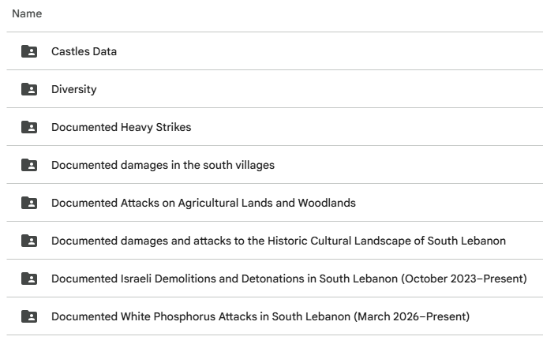
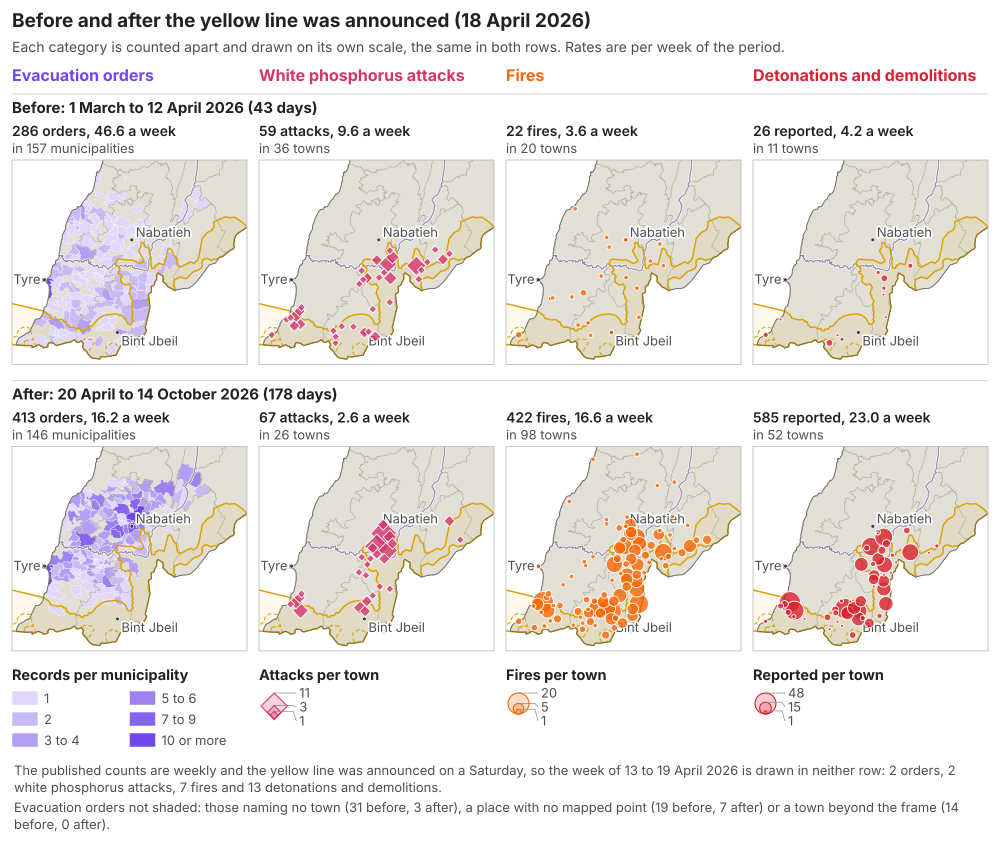

Ecocide, Urbicide and Ethnocide in South Lebanon
The short edition: evidence from the 2026 war, 1 March to 14 October 2026
Draft, under reviewThis edition is shared for review. Figures and wording may change before the final edition.
About this report
How to cite
Green Southerners (2026). Ecocide, Urbicide and Ethnocide in South Lebanon. Short edition, draft for review, November 2026. https://greensoutherners.github.io/south-ecocide-analytics/report/short.html
This edition
November 2026, draft for review. The figures were measured on 17 November 2026 from the Green Southerners corpus. The report counts Beirut calendar days from 1 March to 14 October 2026.
Reading the figures
- Each category of record is counted apart. Fires, white phosphorus attacks, evacuation orders and detonations are never added together.
- A count of records is not a count of events.
- Days are Beirut calendar days. Earlier years appear only as a comparison, never as a series of their own.
- The report publishes statistics, never records: counts, sums and shares by week, month and town.
- Displacement estimates by other organisations are cited as theirs, with their date, and are never added to or set against our counts.
Summary
Between 1 March and 14 October 2026, Israeli military operations in southern Lebanon involved extensive evacuation orders, reported attacks with white phosphorus and widespread detonations and demolitions, while fires burned at rates far above those of the years before the war. The geographical and temporal distribution of these records shows a recurring pattern of military operations and associated environmental and residential destruction, particularly within the territory under Israeli military control south of the so-called "yellow line".
This investigation by Green Southerners examines whether the cumulative effects of these operations have undermined the environmental, material and social conditions necessary for civilian habitation and return, and assesses the documented conduct against the descriptive frameworks of ecocide, urbicide and ethnocide. The escalation began on 2 March 2026, and from 4 March Israeli forces repeatedly issued evacuation orders instructing all residents of southern Lebanon to move north of the Litani River and then north of the Zahrani1; the first evacuation order the corpus holds is dated 2 March 2026. A cessation of hostilities entered into force at 00:00 Beirut time on 17 April2, and on 23 April the United States President announced that it would be extended by three weeks3. On 18 April the Israeli military announced that it had established a "yellow line" in southern Lebanon, with its forces south of it4,5, and on 27 July the UN High Commissioner for Human Rights said that Israeli forces "continue to occupy significant Lebanese territory in the south"6.
We call the territory between the yellow line and the Blue Line the yellow-line zone, a geographical and analytical designation, not a finding of its legal status. Its extent is taken from the one outline the corpus holds, dated 18 June 2026, from a public online map service that states no method, source or licence and whose own dates disagree; the main zone findings were measured again with the line drawn 1 km tighter and 1 km wider, and in bands along the Blue Line, and the results are given with the findings below. The number of people displaced is an outside estimate: the Displacement Tracking Matrix of the International Organization for Migration (IOM) estimated 1,208,869 people internally displaced across Lebanon on 16 April, its highest count of the war7,8, and still 329,686 on 29 September8, estimates for the whole country, not counts of our corpus.
Principal Findings
The findings rest on four categories of record, each from its own sources and counted apart: a town named in an order is not an attack, a fire is not a demolition, and a record is not an event.
Legal Assessment and Conclusion
Set against the three frameworks element by element (Chapter 7), the evidence speaks to them unevenly. For ecocide, in the definition the Independent Expert Panel proposed in 20219, the burned hectares and the departure from the pre-war years speak to the severity of the damage and the towns the fires reached to its extent; the long-term consequences and the knowledge the definition requires are not established. For urbicide, a concept of the scholarship on cities and war and not a crime, the deliberate destruction of the built environment as such10, the demolitions reported in held ground after the cessation of hostilities and the destruction measured in the sampled towns speak to its elements; the military necessity of no single act is assessed. Within urbicide, domicide is the dimension that concerns homes: in the preliminary definition the UN Special Rapporteur on adequate housing offered in 2022 as a starting point, "the deliberate destruction of homes, the rendering of homes uninhabitable or any other systematic denial of housing", carried out in violation of international law and as part of a widespread or systematic attack against a civilian population11. Like urbicide, it is a concept, not a crime. The reported detonations and demolitions, the villages UN bodies describe as rendered uninhabitable and the returns they report impeded speak to its first criterion, homes destroyed or rendered uninhabitable, though the building counts do not tell homes from other buildings; its other criteria, that the destruction was deliberate, in violation of international law and part of a widespread or systematic attack, are not measured. Urbicide stays the frame, because the destruction reached the villages' whole fabric, their shared places and the land around them, not their homes alone. For ethnocide, a descriptive frame here12, whole communities were ordered off the land that holds their homes, fields, places of worship and cemeteries; the destruction of cultural practices and any intent are not established.
The investigation establishes an extensive and geographically concentrated pattern of evacuation orders, reported white phosphorus attacks, elevated fire activity and residential destruction, most marked in the yellow-line zone after the cessation of hostilities. Considered cumulatively, these findings raise serious concerns regarding the degradation of the conditions necessary for civilian habitation and return. Green Southerners concludes that the documented conduct is consistent with significant descriptive elements of ecocide, urbicide and ethnocide. None of the three is a crime under a treaty that binds Israel or Lebanon, and no figure measures intent; the same conduct engages rules that bind today, among them the customary prohibition, depending on how the conflict is classified, of ordering the displacement of civilians or of forcibly transferring the civilian population of an occupied territory, unless their security or imperative military reasons so demand13, and the war crime, customary today, of wanton destruction of towns and villages not justified by military necessity14,15. The conclusion is an evidence-based assessment of cumulative environmental and civilian harm, not a judicial determination of criminal responsibility, and it claims no standard of proof.
The figures rest on published sources, most of them preserved with a content hash, on satellite sensors and on sharp imagery, collected and checked along the steps of the Berkeley Protocol on Digital Open Source Investigations16. Absence is never a finding: "no attack found" means that none was found in these sources. The report is the work of the Green Southerners team; the records behind it and the Visual Archive of Attacks and Damage are available on request at info@greensoutherners.org. Chapter 1 sets out the study area, the war and the evidence.
In the full report: the Summary, with every finding, its denominator and its limits.
Chapter 1 Introduction, Data and Methodology
What area, period and conduct does this edition examine, what evidence does it rest on, and how far can that evidence be relied on? This chapter sets out the study area and the war of 2026, defines the four categories of record the report counts, and summarises how they were collected, preserved and checked.
1.1 Southern Lebanon: Geographical, Ecological and Social Context
The study area is Lebanon's South and Nabatieh governorates: about 2,009 square kilometres from Sidon and Jezzine to the Blue Line, and from the coast at Tyre and Naqoura to the slopes of Mount Hermon (Figure 1). The Blue Line was identified by the United Nations in 2000 to confirm the withdrawal of Israeli forces from Lebanon; it is a line of withdrawal, not an internationally agreed border17,18,19. Our gazetteer holds 354 towns and villages in the two governorates, and every count of towns in this report is a count of its towns. Most of the land is farmed or open. On a land-use map supplied to us within the groundwater geodatabase of the Ministry of Energy and Water, which carries no date and names no producer and is therefore read as a general picture of how the land is used, not as a dated pre-war baseline, farmland covers 38% of the two governorates and grassland and scrub 40%. A village here is its houses, and also its groves and fields, its springs, its cemetery and its place of worship. That is why an environmental organisation documents this war, and why the report examines environmental, residential and community harm together while it counts each category of record apart.
![Map of South Lebanon: the South and Nabatieh governorates shaded, with the boundaries and names of the Tyre, Sidon, Jezzine, Nabatieh, Bint Jbeil, Marjayoun and Hasbaya districts, the Litani river, Beaufort Castle and ten main towns. The yellow-line zone, outlined in yellow, covers the land along the Blue Line from An-Naqoura through Bint Jbeil and Marjayoun to the Hasbaya district, with a part at sea; dashed outlines mark village lands named in the zone from 18 April 2026. An inset locates the frame within Lebanon.](figures/maps/study-area.svg)
1.2 The 2026 War: Escalation, Evacuation Orders and Territorial Control
The escalation examined here began on 2 March 2026, the day from which the Office of the UN High Commissioner for Human Rights (OHCHR) dates large-scale Israeli airstrikes, shelling and ground incursions in Lebanon; from 4 March Israeli forces repeatedly told all residents of the south to move north of the Litani, then north of the Zahrani1. On 6 March OHCHR warned that blanket orders for the whole area south of the Litani risked amounting to prohibited forced displacement20. A cessation of hostilities took effect at 00:00 Beirut time on 17 April2, and the next day the Israeli military announced that it had established a "yellow line", with its forces south of it4,5. On 27 July the High Commissioner said that Israeli forces "continue to occupy significant Lebanese territory in the south"6. The cessation of hostilities did not end the activities the report documents, and the window closes on 14 October 2026 because it is the last day the data holds, not because the war or its consequences had ended.
We call the ground between the yellow line and the Blue Line the yellow-line zone. The corpus holds one outline of it, dated 18 June 2026, from a public online map service that states no method, source or licence, and whose own dates disagree; no outline of the zone as it stood on 18 April is held, so the outline is applied to the whole window, and "inside the zone" before 18 April means ground later inside it. Within the two governorates it covers 30% of the land. Because its provenance is uncertain, the zone findings were measured again with the line moved 1 km inward and 1 km outward, and in bands 5 km and 10 km deep along the Blue Line. On every version drawn from the outline the detonation reports remain concentrated inside, the burned ground is denser inside and the fire contrasts keep their direction, but the size of every contrast moves with the line's edge; in the 5 km band the fire contrasts disappear or reverse, because several of the towns with most records lie inside the outline but further from the Blue Line. The zone is a geographical and analytical designation of ground under Israeli military control: whether it is occupied territory in law turns on effective control, not on how the force in control designates it21, and the report does not determine it.
1.3 Four Categories of Record, Counted Apart
The window runs over Beirut calendar days from 1 March 2026 to 14 October 2026; nothing earlier is counted, and earlier years appear only as dated context or, for the fires, as years to compare with. Four categories of record are examined, each in its own colour and never added to another (Figure 2).
- Evacuation orders (violet): a town or region named in an evacuation order the Israeli army published, 701 records from 145 announcements. A record counts a place named, not people moved. The public platform files these records as forced displacement orders; the report calls them evacuation orders, the term for what the army issued, and uses forced displacement and forcible transfer only as legal characterisations with their basis.
- Reported white phosphorus attacks (pink): white phosphorus reported at one town on one Beirut day, 128 records. 35 are geolocated by footage matched to the terrain or by a satellite sensor, and the others are not geolocated and are drawn at their village. Geolocation says where, not that the munition was white phosphorus: that is what the sources report.
- Fires (orange): one fire the corpus holds, seen by NASA's satellite sensors (FIRMS), mapped by the European Forest Fire Information System (EFFIS) or known from a report, 565 fires. Satellite detections, satellite fire events, burned area and fire records are four measures kept apart. A fire is linked to an attack documented at its town on a day of the fire, or named by its own source: an association, not proof that the attack lit it.
- Detonations and demolitions (red): a report of buildings blown up or demolished in one village on one day, 624 reports; not a count of explosions or of buildings. The building damage measured on imagery in a sample of towns is given apart, and dated by the two images that bracket each change, not to a day.
![Four stacked lanes of weekly bars sharing one time axis from March to October 2026, each on its own scale: evacuation orders, highest in the first week of March and again from late April to early June, then almost none; white phosphorus attacks, highest in late March and thinning after April; fires, low in spring and high from late June to September, most of them attack-linked; detonations and demolitions, a small rise in April, a dip in May and June, then high from July to early October. A vertical rule marks the cessation of hostilities and the yellow line of 17 and 18 April.](figures/charts/weekly-lanes.svg)
The corpus does not collect every type of attack, so a total across categories would claim a completeness it does not have. It counts no one killed, injured or displaced; where the report gives such figures they are other organisations', cited as theirs.
1.4 Data Sources and Collection
Media reports and official announcements. We follow 20 channels on Telegram with 38 keywords in Arabic and English, and searched 71 accounts on X for white phosphorus: the Lebanese and international press, official and other publishers, among them the National News Agency, L'Orient-Le Jour, An-Nahar, Al Jadeed, LBCI and Al Jazeera. A saved message becomes a record only by the written rules of its category, and the whole text history of the channels we follow, 426,811 messages of the window, is searched for a reported attack at each fire's and each order's town and day. The orders come from the Israeli army's own announcements, collected as they appeared; its channel no longer holds its messages from before 16 October 2026, so our hashed copies are now the record.
Satellites and sensors. NASA FIRMS gave 1,185 thermal detections in the window and Copernicus EFFIS 346 burnt areas labelled Lebanon in a box over the south; we measured the burn scars of 242 fires on Sentinel-2, and read sharp pictures at 0.3 m from OnGeo Intelligence building by building over 23 towns. A sensor shows heat, burned or changed ground at a place and between two dates, never what caused it.
Our field members and the Visual Archive of Attacks and Damage. Green Southerners' field members photographed and filmed what was done to the south's villages, fields and woodland, and our researchers gathered what others published. The Visual Archive of Attacks and Damage holds hundreds of these images and videos, at least 770 in its folders on attacks and damage alone (Figure 3). It is not linked to the records, and no figure is counted from it.

The community map and open-source data. Open maps hold a community's places only in part: OpenStreetMap names only 113 of the 519 places of worship it maps in the two governorates. So we shared a community map with local communities, for them to add the cultural sites missing from OpenStreetMap, Google Maps and the Ministry of Culture's register; its submissions are not part of this edition's figures. The records are read against 32 open and supplied reference datasets, which describe the land, not the war.
The tool we built. The Green Southerners team runs its own documentation platform, one spatial database with a web interface, which carries each record from collection to preservation and logs every change (17,917 of them). Its public face, South Ecocide Analytics, publishes statistics only (Figure 4).
![Screenshot of the South Ecocide Analytics platform: a panel listing the four categories of record, labelled fires, white phosphorus, displacement orders and detonations, with their counts and filters, beside a map of South Lebanon where municipalities are shaded violet by the orders, regions named in orders are outlined with dashes, orange and pink marks show fires and white phosphorus attacks per town, red outlines show municipalities with detonations, and a weekly timeline with one lane per category runs under the map.](figures/screens/platform-all.jpg)
1.5 Investigative Methodology: The Berkeley Protocol in Practice
We hold the evidence behind every figure to the Berkeley Protocol on Digital Open Source Investigations of the UN human rights office and the University of California, Berkeley16: professional guidance, not law, on finding, keeping and checking public posts, pictures and satellite imagery so that fact-finders can rely on them.
- Preservation. Sources are captured and fixed with a SHA-256 hash when they are collected, and copied to a public web archive where it allows, but not evenly. Every order source is hashed and archived (100%), and 99.7% of the fires' report sources are hashed and 99.7% archived. For white phosphorus, 89.7% of the sources are hashed but only 50.7% archived; for detonations, 77.7% are hashed and 39.4% archived. Fewer of these two are archived because the web archive throttled our requests and refuses X.
- Verification. The source, the file and its content are examined together: pictures are searched for earlier copies, each detonation file attached by 9 September 2026 was kept only if it shows the blast or its smoke, and a detonation report stands only on a source of its own Beirut day.
- Three levels of evidence, kept apart. A record is reported when a collected source supports it (of the 128 white phosphorus records, 108 hold at least one preserved source, with a content hash and an archive copy or, for posts on X, our own capture); located when footage matched to the terrain, a satellite detection, a burn scar or a mapped polygon places it, rather than its village's point, which places the village, not the event; and independently corroborated where a second type of evidence, not derived from the reports, agrees with it. A located record is not thereby corroborated as to what happened, and no level establishes cause, target or intent.
The page shows statistics, not the evidence; the records are available on request (Section 8.3). Chapter 2 begins with the first category of record, the evacuation orders.
In the full report: Chapter 1, Introduction, with the study area, the war, the research question and the zone's provenance; Chapter 2, Data Sources and Collection; Chapter 3, Investigative Methodology: The Berkeley Protocol in Practice.
Chapter 2 Evacuation Orders and Displacement
How far, and when, did the Israeli army's evacuation orders reach across South Lebanon, what was documented at the towns they named, and what can be established about the displacement of people? The orders named most of the towns of the south, directed everyone south of the Zahrani to leave, continued after the cessation of hostilities to a peak in May, and moved north until mid June. The corpus documents the orders as the army published them, not the people they moved.
2.1 Geographical Reach of the Orders
The 701 records of the window come from 145 announcements and name 248 distinct towns and villages. The counts describe two scopes. Across the whole of Lebanon, the orders named 248 towns; within the report's study area, the South and Nabatieh governorates, they named 228, 64% of the 354 towns and villages our gazetteer holds there, and the other 20 lie in the Beqaa, Baalbek-Hermel, Mount Lebanon and Beirut governorates. Orders addressed to whole regions directed everyone south of the Zahrani to leave (12 records): drawn from their words, that area covers 84% of the two governorates (Figure 5). The orders were therefore not confined to the area near the Blue Line. It is this breadth that the UN human rights office identified as the source of its concern: blanket orders were very difficult to comply with and risked amounting to prohibited forced displacement20,1.

2.2 Chronology: The First Week, the May Peak and the Northward Shift
The first week was the busiest: 161 records, naming 51% of all the towns the orders would ever name. The cessation of hostilities did not end the orders; their peak came after it: 42.0 records a week before 18 April, 49.5 from then to 14 June, and May the busiest month. The orders moved north. In March 63% of the records named towns south of the Litani; in June 3% did, and 90% named towns north of it in the two governorates. Before 18 April 25% of the records naming a town named one inside the yellow-line zone; from that day, 3%. After the week of 8 June 2026 the corpus holds only 3 order records. The warnings relayed in our archive of media channels fall away in the same weeks, which suggests that the decline is not only a gap in the collection; the corpus does not show why the orders ceased.
2.3 The Applicable Law
Customary law prohibits, in a non-international armed conflict, ordering the displacement of civilians and, in an international one, forcibly transferring the civilian population of an occupied territory, in both cases unless their security or imperative military reasons so demand; which applies depends on how the conflict is classified and whether the ground is occupied13. Whatever the classification, customary law gives the displaced the right to return in safety as soon as the reasons for their displacement cease22. Read against these rules, the orders are difficult to reconcile with a temporary measure for the safety of the people they concerned: they named most of the towns of the study area and, in orders to whole regions, directed everyone south of the Zahrani to leave; they continued until mid June, well after the cessation of hostilities took effect; and the UN human rights office found that the March warnings often set no duration1. This is an inference from their breadth and their timing. The corpus cannot measure intent, military necessity or the reasons for any order, and whether the orders amount to forced displacement or unlawful transfer is a legal characterisation weighed in Chapter 7, not a finding of this corpus.
2.4 Population Displacement: Outside Estimates
The corpus counts towns named in orders, never people, and the orders state no number of people. The estimate United Nations bodies quote is that of IOM's Displacement Tracking Matrix, which counts the people displaced across Lebanon on a given day through some 1,450 key informants, and which OCHA and UNHCR relay8,23. We cite its figures as it gives them, with the day each refers to, and never add them to, or set them against, a figure of ours; nor can they be attributed to particular orders.
IOM recorded 1,208,869 internally displaced people across Lebanon on 16 April 2026, its highest count of the war7,8. On 18 April it counted 827,702 still displaced and 400,593 who had gone back, returns it said "cannot be considered permanent"24. On 29 September, its last count before the end of our period, it still recorded 329,686 people displaced, against 877,203 who had begun returning; by its projection, Bint Jbeil was the district of origin of 89,414 of them (27%), Nabatieh district of 82,654 (25%) and Tyre of 72,274 (22%)8. The Secretary-General reported some 55 Lebanese villages in the area reaching up to 10 km north of the Blue Line on the map the Israeli army published on 19 April; that kinetic activity, unexploded ordnance and extensive damage to infrastructure constrained humanitarian access, with villages near the Blue Line largely inaccessible; and that the presence of the Israeli army north of the Blue Line, with kinetic activity, blanket evacuation orders, the destruction of civilian infrastructure and unexploded ordnance, had impeded returns25. We found no United Nations or IOM count of the people displaced from that area.
Reported white phosphorus attacks began in the same first week of March; Chapter 3 asks where and when they were reported and how much of that reporting is corroborated.
In the full report: Chapter 4, Evacuation Orders and Displacement, with the means of delivery, the applicable law and every outside estimate of people.
Chapter 3 Reported White Phosphorus Attacks
Where and when was the use of white phosphorus reported in South Lebanon, how much of that reporting can be placed on the ground or corroborated independently of the reports, and how close to homes did the geolocated attacks fall? We recorded 128 white phosphorus attacks reported at 49 towns, most of them in March and April, first at the villages near the Blue Line and then on the Litani front around Nabatieh. Where an attack can be placed on the ground, it lies close to buildings more often than not, at the edge of a village or on the land around it.
3.1 Chronology and Geographical Distribution
A record is white phosphorus reported at one town on one Beirut day, not a count of shells or strikes; in this chapter an "attack" is always a reported attack. The first reported attacks fell in the week of 2 March 2026, the week of the first evacuation orders: the two ran in parallel, not one after the other. March alone holds 49 reported attacks. The weekly rate fell from 8.8 before 18 April to 2.6 after it, and did not rise after the yellow line was announced, as the detonation reports and fire records did; nor did the reports cease with the cessation of hostilities, 68 reported attacks dating from 18 April or later.
All the reported attacks fall south of the Zahrani, in two groups (Figure 6). 80 were reported at 42 towns between the Blue Line and the Litani, from An-Naqoura to the Hasbaya hills; the other 48 at only 7 towns on the Litani's north bank around Beaufort Castle and Nabatieh, the towns with most reports of all, led by Yohmor (12) and Zawtar El Sharqiyeh (12). The reports followed the front line: first the villages near the Blue Line, then the towns on the Litani at the northern edge of the ground the Israeli army came to hold, and just beyond it. On the outline as held, 69% of the reported attacks were at towns inside the yellow-line zone; but many lie at towns just inside its edge, so with the line drawn 1 km tighter the share falls to 38%, while 1 km wider it is 77%. "Most attacks at towns inside the zone" therefore depends on where that edge is drawn.

3.2 Classification of the Evidence: Reported, Geolocated and Independently Corroborated
Every figure rests on one of three levels of evidence, each a separate claim. Reported: every record but 1 is white phosphorus reported at one town on one Beirut day by at least one collected source, dated as its sources date it (the exception, placed by footage, has no linked report source and is flagged for review); for most records the munition is what the sources report, assessed on imagery for 23. Geolocated: 35 reported attacks are placed on the ground by one named method with a preserved source, never by an average: 19 by footage of the attack or its smoke matched to the terrain, within about 120 m, and 16 by a satellite sensor, within about 500 m; a sensor point is a fire observed near the village that day, consistent with the report but not by itself proof of the attack. Geolocation says where, not that the munition was white phosphorus. Independently corroborated: the corpus has no single class of corroborated attack, only separate lines that do not derive from the reports, among them a satellite detection at the village that day (19) and two or more independent origins of reporting (16). Only 6 reported attacks have both the place and the munition established from imagery, and 89 (70%) are known from reports only.
3.3 Proximity to Buildings
63% of the 35 geolocated attacks fell within 100 m of a mapped building, though only 34% in mapped built-up land, and the test says little for those placed by a sensor, which are uncertain by about 500 m. Against random points on the land of the same localities, the attacks lie nearer to buildings (65% against 51% within 100 m), but on so few points the difference could still arise by chance (one-sided p = 0.08): it points in one direction and is not statistically conclusive. The sources more often name the outskirts, hills, valleys, woodland and farmland of a town, and in a few towns its neighbourhoods. The measure supports proximity to buildings, at the edges of villages where houses give way to the land people live from; it does not show a general concentration on residential land, and it counts no house struck and no person harmed.
3.4 The Applicable Rules and Findings of Other Investigators
White phosphorus burns on contact with air, sets fire to what it lands on and causes severe burns26. It is not prohibited as such: Protocol III to the Convention on Certain Conventional Weapons binds Lebanon but not Israel, and reaches only weapons "primarily designed" to burn, so artillery white phosphorus marketed for smoke or marking falls outside it in practice27,28. What binds every party, Israel included, is the customary duty to take particular care to avoid, and in any event to minimise, incidental harm to civilians and civilian objects when incendiary weapons are used29, a duty engaged most directly at the edges of villages. Human Rights Watch reported artillery white phosphorus over homes in a residential neighbourhood of Yohmor on 3 March 202626, and with Harvard Law School's International Human Rights Clinic reported incidents from an independent researcher's archive, geolocated by the researcher to Al Khiam, Arnoun, Yohmor and Zawtar and independently verified and geolocated by Human Rights Watch28, all among our 7 towns with most reported attacks. These are their findings, on their own evidence; the agreement is a check on place, not a second count and not an independent corroboration of our records. Whether a given use was unlawful turns on what was targeted and why, which the records cannot show; they show where and when white phosphorus was reported, and how much of that reporting is corroborated.
The fires are the next category of record, and the one in which satellite evidence weighs most: Chapter 4 asks where and when they burned, how far they can be associated with documented attacks, and how they compare with the years before the war.
In the full report: Chapter 5, Reported White Phosphorus Attacks, with the weekly series, every line of evidence, the tests against the land round each attack, what the sources state was struck and the fire records associated with white phosphorus.
Chapter 4 Fire Activity: Attack Association, the Yellow-Line Zone and the Pre-War Baseline
Where and when did fires burn in South Lebanon in 2026, how far can they be associated with documented Israeli military attacks, and did fire activity exceed what the season, the weather and the years before the war would produce? The corpus recorded 565 fires. Most are associated with an attack documented at their town on a day of the fire, most burned in the summer, and most lay in the yellow-line zone, where after the cessation of hostilities their rate rose more steeply than on the ground beside it. Over the same weeks and ground, the satellites recorded several times the fire activity of the years 2019 to 2023.
4.1 Fire Records, Attack Association and Burned Land
A fire enters the corpus from a NASA FIRMS detection (267 fires), from a media report of a fire with no FIRMS detection of its own (256), or from an EFFIS polygon nothing else covered (42). A fire under cloud, a small or short fire, or one nobody wrote about leaves no record, so every count is a floor. The fires burned at 162 towns, July and August holding 58% of them.
The corpus does not observe ignition. It links each fire to the attacks documented at the same town on a Beirut day of the fire, in its own records, an open feed of reported attacks or the media. 344 fires (61%) are attack-linked: 336 with an attack documented at their town on a day of the fire, an association in place and day, and 8 with the attack named only by their own source, an attribution in the source. Most, 294, are filed under the cause detail "secondary fire from an explosion": shelling, an airstrike, a drone strike, a detonation or another attack was documented at their town on a day of the fire, or their own source names such an attack, which does not show that it lit them; 19 burned where white phosphorus was reported that day: most were associated not with weapons designed to burn but with shells, bombs and demolition charges in dry grass, scrub, fields and gardens. For 219 no attack was found in these sources, which never means that none happened. The remaining 2 are filed as non-attack fires, because a source on the fire states another cause; a non-attack cause is never read off the absence of a report. How a fire was found shapes the attack share: a reported fire is built only from a report that carries the context of an attack, while the fires a satellite detected are the sample nobody chose, and among them an attack is documented for 43%. The attack share is therefore not an estimate of how many of the south's fires attacks lit.
The burn scars measured on Sentinel-2 cover 6,506 ha on 242 fires, a floor of the burned ground. What burned was not forest: on the 2025 land-cover map of Impact Observatory, Microsoft and Esri, the burned ground the platform publishes is 60% rangeland, the open scrub and grass of the hills, 23% built area, the village with its gardens and orchards, 17% crops and 0.2% trees. The undated land-use layer supplied with the Ministry of Energy and Water's groundwater geodatabase points the same way. It is land people live from and live in; whether the damage will last, seven and a half months cannot show.
4.2 Seasonal Timing and the Yellow-Line Zone
The zone covers 30% of the two governorates' land, yet holds 64% of the fires recorded and 79% of the burned ground. With each fire placed by its burn scar, its own point or its village's point, the weekly rate of fire records there went from 1.6 before 18 April to 13.7 after it, against 2.8 to 7.0 in the rest of the collection area (Figure 7). Counting only the attack-linked fires, each at its town's point, the rate rose 5.3 times inside the zone and 1.5 times outside it in the same governorates; these ratios rest on 11 and 17 such fires before 18 April, and are fragile. These are fire records of every origin, not satellite fire events.

Part of the summer rise is the season's, so the yardstick is the satellite record alone. From the period 18 April 2026 to 14 June 2026 to the period 15 June 2026 to 14 October 2026, the weekly rate of satellite fire events over the whole south rose 2.6 times, against 2.4 times between the same calendar days of 2019 to 2023: that part of the rise matches the season. What the season does not explain is the zone against the ground beside it. After 18 April, satellite fire events inside the zone stood at 4.7 times their 2019 to 2023 mean for the same days, and outside it at 2.5 times, a contrast of 1.9. Counted from one sensor, VIIRS on Suomi NPP, in every year, they are 4.6 and 2.4, a contrast of 1.9: the same. In 2024, when the area formed part of an active front, the contrast stood at 2.6, so the level contrast alone does not distinguish held ground from a front; what marks 2026 is that the burning persisted after a cessation of hostilities, in ground under Israeli military control.
The size of these contrasts depends on where the line is drawn; their direction holds with the line 1 km tighter or wider. With the line 1 km tighter the fire-event contrast falls to 1.4 and the ratio of the attack-linked rise inside to the rise outside from 3.5 to 1.5; 1 km wider they rise to 2.1 and 4.3. Burned ground is denser inside on every version. In a band 5 km deep along the Blue Line the fire contrasts disappear or reverse (0.9 and 0.6), because several of the towns with most records lie inside the outline but further from the Blue Line: the findings concern the ground the outline reaches beyond the border strip.
4.3 Fire Activity Against the 2019 to 2023 Baseline
Every year is read over the same window, 1 March to 14 October, on the same ground and with each instrument counted alone, against the five pre-war years 2019 to 2023; 2024 and 2025 are context and never enter the baseline. On the lead sensor, VIIRS on the Suomi NPP satellite, detections in 2026 were 3.7 times the pre-war mean (90.0 detections) and 2.6 times the highest pre-war year (Figure 8). After 30 June 2026 the 2026 count rests on near-real-time processing; on standard processing alone, up to that day, the ratio is 3.2. On a different measure, over a box round the south and a shorter window, EFFIS mapped 33.1 times the 2019 to 2023 mean of 196 ha in burns of 30 ha or more, which it maps alike every year, from 1 March up to 15 September 2026; that mean rests on 1 to 5 such burns a year. Heat seen at an overpass and ground mapped as burned are never combined.

The other war year, 2024, a year of hostilities until the ceasefire of November 2024, stood at 4.0 times the pre-war mean on the satellite count, and 2025, the year after it, at 0.9 times: the excess coincides with the years of hostilities rather than recurring every year. It lies in the dry season: March, April and early October 2026 sit at or below their pre-war means, and August 2026 stands at 8.0 times the pre-war August. Every figure comes from public instruments that anyone can query again: VIIRS on Suomi NPP and NOAA-20 and MODIS on Terra and Aqua through NASA FIRMS, Copernicus EFFIS, Copernicus Sentinel-2, NASA's GFWED and Copernicus GWIS for fire danger, and the ERA5 reanalysis and the ICON forecast for the weather.
4.4 Fire Danger and Weather on the Days of the Fires
A fire season follows the weather; fires set by war need not. Each fire carries the fire-danger index that NASA's Global Fire WEather Database (GFWED) forecast for its day the day before, and the weather of its day. Of the 66 fires recorded from March to May, 53% burned on days rated low and 45% on a day with rain; most are known from reports alone, which become records only with the context of an attack, and the satellites saw about 1.4 times the number of spring fires the pre-war years would give, far below the summer's excess. In summer a satellite saw fire on 87% of July's days and 90% of August's, against 37% and 37% before the war, on the same four instruments; the pre-war days rest on standard processing, and the 2026 days after 30 June 2026 on near-real-time processing for VIIRS. That summer was itself one of exceptionally high fire danger: the median July fire burned on a day at the 96.8th percentile of EFFIS's long record. Weather and war push the same way in summer and no baseline separates them there, so the contrast across the zone's line and the low level of 2025 weigh more in this assessment than the summer excess.
Fire is one form of harm to the land; Chapter 5 turns to the destruction of the built fabric of the villages.
In the full report: Chapter 6, Fire Activity in the 2026 War, with the attack association, the evidence behind each fire, the burned land, the Key Biodiversity Areas and water; Chapter 7, Fire Activity Before and During the War, with every like-for-like measure, its denominator, the fire-danger forecasts and the weather.
Chapter 5 Detonations, Demolitions and Building Damage in the Villages
Where and when was the detonation and demolition of buildings reported in South Lebanon, what does imagery show of building damage in a sample of towns, and can that damage be dated before or after the cessation of hostilities? This chapter holds the report's principal evidence relevant to urbicide: the destruction of the built fabric of the border villages, their houses and the places their people share. These findings establish the timing, place and scale of the destruction; they do not by themselves establish intent.
5.1 Temporal and Geographical Distribution of the Reports
A record is one report that, on a given Beirut day, a source of that day, the press or social media, said a detonation or demolition had taken place in a named village. It is not a count of blasts and not a count of buildings, and each is placed at its village's point, which places the village and never the building. We recorded 624 such reports at 52 towns. Most of these towns, and almost all the reports, lie in the yellow-line zone: 42 of the towns, holding 91% of the reports (Figure 9). The concentration does not rest on the outline's exact edge: with the line drawn 1 km tighter 68% of the reports concern towns inside, and 1 km wider 98%; within 5 km of the Blue Line the share is only 36%, because several of the towns with most reports lie further from it. From 18 April the zone's towns had 31.6 reports a week for every hundred towns, the rest of the two governorates 0.8.

Over time the reports rose to late April, fell in May and June, and from the week of 29 June 2026 changed level: each of the 14 weeks from 29 June 2026 held 22 reports or more, 80% of all the reports of the window. The low of May and June is in what reached the corpus: the messages collected about detonations fell with the reports, so the data cannot say whether fewer buildings were demolished in those weeks or fewer demolitions were reported. In the towns measured on imagery, destruction did not pause: in 8 of the 11 towns, buildings were destroyed between two pictures both taken in May or June.
5.2 Reporting Rates Before and After the Cessation of Hostilities
Before 18 April the corpus holds 32 detonation reports, 4.7 a week. From 18 April to 14 October it holds 592, 23.0 a week, or 4.9 times the earlier rate: 95% of all the reports date from after the cessation of hostilities had taken effect. Every report before 18 April was already of a town inside the zone, so the zone does not sharpen this rise; it locates it. The reported demolitions were in the zone's towns both before the line was announced, on ground later inside it, and after, on ground under Israeli military control as the army announced it; 28 of the 42 zone towns with a report have none before 18 April.
5.3 Building Damage Measured on Imagery in a Sample of Towns
To see what the reports cannot, we read the buildings of 11 towns one by one on sharp pictures from before and after: aerial pictures of 2026 at 0.3 m from OnGeo Intelligence, and Esri World Imagery for the last pictures before the war. A building is classed destroyed or damaged only when a majority of separate readings of its pictures, each made without sight of the others, agree. Where no sharp pair exists, as across all of Zawtar El Sharqiyeh's own land, a building is classed changed when the ground at it brightened and stayed bright on Sentinel-2: an observed, lasting change at 10 m, not a confirmed destruction. The towns were chosen for study, not drawn at random, so they stand for neither the zone nor the south; their counts are never added together or to the reports, and 42 towns with reports have no measurement.
In each town's own land, the pictures show 981 buildings first seen destroyed in the window in Bint Jbeil, 702 in Aitaroun, 393 in Aynata, 334 in At-Tiri and 280 in Al-Mansouri (Figure 10). Of all the mapped buildings in each town's counting area, its land and 1.5 km round its built-up ground, 11% to 30% were first seen hit in the window, a fifth or more in 7 of the towns.

5.4 Dating the Damage: First Observation and the Image-Date Interval
Imagery does not date destruction; it brackets it. Each building hit in the window lies between the last picture on which it is unchanged and the first on which it is changed, and "first seen" is only the closing date of that bracket. Against the cessation of hostilities, which took effect at 00:00 Beirut time on 17 April, a building changed certainly after it when it was still unchanged on a picture taken on or after that day; certainly before it when it was already changed on a picture taken before; and its bracket straddles the cessation when it holds the day, so that the pictures cannot say. On first observation alone, in 10 of the 11 towns more than half of the buildings hit in the town's own land were first seen after the cessation took effect. On the image-date interval, which this report uses for timing, the figure is 8 of 11: in these towns more than half of the buildings hit were still unchanged on a picture taken on or after 17 April, and so were destroyed, damaged or changed after the cessation of hostilities took effect. In no town do most of the buildings straddle it.
The towns differ. In Bint Jbeil, 41% of the buildings hit changed certainly after the cessation and 23% certainly before it, while 35% straddle it, most between the clear Sentinel-2 passes of 16 April 2026 and 29 April 2026, with no clear pass between them. Counting destroyed buildings alone, 81% of Al-Mansouri's were destroyed certainly after the cessation, where first observation alone gives 89%; in Bint Jbeil 31% were destroyed certainly after it and 43% straddle it, where first observation alone gives 73%. Aitaroun is the exception in the other direction: 52% of its buildings hit in the window changed certainly before the cessation.
The pictures and the reports measure different things. The reports record the detonations and demolitions the media named by village and day; the pictures record what became of the buildings, without saying how. Where a town drew steady reporting, as Al-Mansouri did from July, the two move together. Where it did not, the reports miss most of what the pictures show: Maroun al-Ras has 257 buildings of its own land first seen destroyed, damaged or changed in the window (200 of them changed on Sentinel-2 only) and not one detonation report. The report series shows the method the sources name, demolition by explosives in villages under Israeli military control, and where it was named; the imagery, in the towns it covers, shows the scale, and that in most of them the greater part of the buildings hit changed after the cessation of hostilities took effect.
5.5 Sources, Visual Evidence and Community Infrastructure
On 613 of the 624 reports a source of the day itself calls the destruction a detonation or demolition, an act aimed at the building rather than damage from fighting, and 350 carry a preserved photograph or video, each file hashed; the files attached by 9 September 2026 were looked at and kept only where they show a detonation or its column, those attached since (498) not yet; a file the review kept shows a detonation, not that it depicts the building the report concerns. Most citations come from the Lebanese media, among them the National News Agency and An-Nahar.
The territories of the towns with reports hold 99 mapped places of worship, 52 public schools, 14 cemeteries and 10 health sites: about their share of the south's land, no more. The corpus holds no assessment of damage to any of these places, and the building counts do not say what a building was used for; that is a gap in the corpus, not a finding that none was damaged. Others name what went with the houses. The UN High Commissioner for Human Rights said in July that he had heard how entire villages south of the Litani "have been razed or rendered uninhabitable", as strikes and demolitions had flattened homes, schools, healthcare facilities, water networks, places of worship and farmland6. In Bint Jbeil, Al Jazeera geolocated videos posted between 16 and 24 April and found the demolitions concentrated in the commercial centre, the Great Mosque in ruins, schools and a hospital hit, and demolitions continuing after the cessation of hostilities30.
The houses are one dimension of that fabric. For the destruction of homes, the UN Special Rapporteur on adequate housing offered, as a starting point, a definition of domicide: "the deliberate destruction of homes, the rendering of homes uninhabitable or any other systematic denial of housing", when carried out in violation of international law as part of a widespread or systematic attack against a civilian population11. The reported detonations and demolitions, the order to accelerate the demolition of houses in the border villages that Human Rights Watch reports31 and the villages the High Commissioner heard had been rendered uninhabitable speak to that dimension, though the building counts do not tell homes from other buildings. The report weighs domicide inside urbicide, not beside it (Section 7.1), because the destruction reached the villages' shared places, water networks and farmland as well as their homes.
Each category of record has now been read alone; Chapter 6 sets the four side by side, week by week and town by town, against the war's calendar and the fire season.
In the full report: Chapter 8, Detonations, Demolitions and Building Damage in the Villages, with the weekly series, the towns, the measured buildings and their image-date intervals town by town, the search for detonation footprints, and the evidence set against each element of urbicide.
Chapter 6 Combined Temporal and Geographical Patterns
Do the four categories of record form a recurring sequence in time and place beyond what the war's own calendar and the fire season would produce? Set side by side, week by week and town by town, they trace a recurring course. In the first weeks of March the Israeli army issued evacuation orders across the south, and white phosphorus attacks were reported in its border villages and on its front. After the cessation of hostilities took effect and the yellow line was announced, white phosphorus was reported less often, detonations and fires rose inside the yellow-line zone, and the orders moved north. These are recurring patterns, measured against their baselines; they are not proof of coordination, of a plan or of intent.
6.1 Three Phases of the Investigation Period
Two dates divide the window: the cessation of hostilities of 17 April with the yellow line announced the next day, and 15 June 2026, the Monday after the last week with ten or more order records. Each of the three phases belongs to a different category of record (Figure 2). The first, 1 March to 17 April, is white phosphorus's: it holds 47% of the reported attacks, at 8.8 a week. The second, 18 April to 14 June, is the orders': 58% of their records, at 49.5 a week, more than before the line. The third, 15 June to 14 October, is the destruction's: 84% of the detonation reports, at 30.0 a week against 4.7 in the first phase, and 77% of the published fires. The medians make the order plain: half of the reported white phosphorus attacks fell within 58 days of 1 March and half of the order records within 63, while half of the published fires took 152 days and half of the detonation reports 160.
6.2 Inside and Outside the Yellow-Line Zone
After 18 April the categories of record moved in opposite directions across the yellow line (Figure 11). Before that day 24.7% of the order records naming a town named one inside the zone; from it, 3.2%, as the orders extended north, from the Litani to the Zahrani and past it. The weekly rate of reported white phosphorus attacks fell on both sides of the line. Inside it, the destruction rose: detonation reports reached 64% of the zone's towns, against 4% of the towns outside it in the two governorates, and attack-linked fires rose 3.5 times more inside the zone than outside it, on few fires before 18 April. Against the years before the war, satellite fire events after 18 April stood at 1.9 times as high a multiple of their pre-war level inside the zone as outside it (1.9 on one sensor; Section 4.2).
Because the outline comes from a source that states no method or licence, the zone findings were measured again on other delineations (Table 1). Three hold on every delineation built on the outline and in the 10 km band: detonation reports cluster inside, burned ground is denser inside, and the fire contrasts keep their direction; their size moves with the line's northern edge, round Beaufort Castle, the Litani and the coast south of Tyre. In the 5 km band the fire contrasts disappear or reverse, because several of the towns with most reports lie further than 5 km from the Blue Line: the findings concern the deeper ground the outline reaches, not a border strip.

| Finding | As held | 1 km tighter | 1 km wider | 5 km band | 10 km band |
|---|---|---|---|---|---|
| Detonation reports at towns inside, share | 91% | 68% | 98% | 36% | 99% |
| Attack-linked fires: rise inside over rise outside | 3.5 | 1.5 | 4.3 | 0.6 | 4.5 |
| Satellite fire events against 2019 to 2023: rise inside over rise outside | 1.9 | 1.4 | 2.1 | 0.9 | 2.0 |
| Share of the land under burn scars, inside over outside | 9.4 | 5.2 | 14.5 | 4.8 | 10.6 |
| White phosphorus attacks reported at towns inside, share | 69% | 38% | 77% | 22% | 83% |
6.3 Town-Level Sequences Against the Calendar Baseline
For each town we took the first Beirut day of each category of record and asked which came first. Because each category had its own season over the whole south, each comparison is set beside the share the war's calendar alone would give, found by shuffling each category's first days across the same towns. The clearest ordering is white phosphorus before detonation. At every one of the 30 towns with both in the window, the first reported white phosphorus attack came before the first detonation report, a median of 39 days earlier, where the calendar alone gives 84% and would put all 30 in that order about once in 22,000 shuffles (one-sided p = 0.000046). At some of these towns detonations had already been reported before the window, so there the order holds only from 1 March. It is a statistical association in time: it does not show that one form of conduct led to the other, or that they were coordinated.
The rest of the sequence is mostly the calendar's. An evacuation order, then white phosphorus, then a fire or a detonation holds at 33 of the 42 towns that hold all three, against 70% expected from the calendar alone (one-sided p = 0.06). "Order first" is close to automatic, because the orders to everyone south of the Litani, then south of the Zahrani, began in the first two weeks of March and covered almost all the ground where destruction was later recorded. And white phosphorus ran in parallel with the orders, not after them.
6.4 Findings, Interpretations and Questions for Further Investigation
Established findings. The categories of record have their own calendars: the orders and the reported white phosphorus attacks came first and together, fires and detonations months later. Reported destruction rose inside the yellow-line zone, in a concentration whose direction holds on every delineation built on the outline; within the window, white phosphorus came before detonation at every town with both; and the orders moved north as the destruction stayed in the zone.
Interpretation. Read together, the findings describe one recurring course: evacuation orders covering most of the south, white phosphorus attacks reported in the border villages and on the front, and then, in the zone under Israeli military control, houses destroyed and land burned, the burning at levels that neither the season nor the years before the war account for, while the orders extended north. The cessation of hostilities did not end the attacks recorded: from 18 April the record holds 68 reported white phosphorus attacks and 316 attack-linked fires, each counted in its own category. The pattern is consistent with most of the south being ordered to empty, and with the villages of the zone losing much of their built fabric, as far as the measured towns show. It is a measured, recurring pattern, not proof of a plan.
Questions requiring further investigation. What the orders, the attacks and the demolitions were intended to achieve, and whether they were coordinated; whether any demolition was required by military necessity; whether the zone was occupied territory in law; what lit each fire; and how many people left or could not return. Chapter 7 sets the evidence against the three concepts and the rules of international humanitarian law.
In the full report: Chapter 9, Combined Temporal and Geographical Patterns, with every delineation of the zone tested and every pair of categories town by town against the calendar.
Chapter 7 Legal and Conceptual Assessment: Ecocide, Urbicide and Ethnocide
Does the documented conduct correspond to the descriptive elements of ecocide, urbicide and ethnocide, and which binding rules of international humanitarian law does the same conduct engage? This chapter sets each element beside the evidence that speaks to it, states how far that evidence reaches, and sorts its conclusions into established findings, interpretations, open legal questions and limits. It is an assessment of evidence, not a judicial finding.
7.1 Analytical Framework and Terminology
None of the three is, today, an offence under a treaty that binds Israel or Lebanon, and they are not interchangeable: each is a proposal, a scholarly concept or an experts' declaration that gathers conduct existing law already prohibits under one name. So we do two things and keep them apart: for each concept we take its elements from the texts that define it and set against each the measure that speaks to it, or say that none does; then we name the rules the same conduct engages. Five types of statement are kept apart throughout: documented facts, satellite observations, statistical associations, interpretations, and legal characterisations. So are the terms that carry a legal meaning: military control of the yellow-line zone is documented as the army declared it, while belligerent occupation turns on effective control and is not determined here32,21; evacuation orders are documented, while forced displacement and unlawful forcible transfer are characterisations, cited as the findings of the bodies that make them; the destruction of property is documented, while its justification by military necessity is assessed for no single act; and a recurring pattern is measured, while a coordinated policy or deliberate intent is inferred, and said to be inferred, from timing, place, repetition and scale and from officials' statements as UN bodies and human rights organisations report them. The conclusions say "consistent with" and "engages", never that the conduct "is" a crime.
"'Ecocide' means unlawful or wanton acts committed with knowledge that there is a substantial likelihood of severe and either widespread or long-term damage to the environment being caused by those acts."
Independent Expert Panel for the Legal Definition of Ecocide, 20219
Ecocide in this definition is an expert proposal, not law by itself; Vanuatu, with Fiji and Samoa, proposed in September 2024 to add it to the Rome Statute33,34. The nearest crime that exists, an attack launched in the knowledge that it will cause "widespread, long-term and severe damage to the natural environment" clearly excessive to the military advantage anticipated, sets three cumulative conditions, a higher threshold that we do not claim35.
"the destruction of shared spatiality which is the condition of possibility of heterogeneous communities"
Martin Coward, defining urbicide, 200610
Urbicide is a concept of the scholarship on cities and war, an offence in no law: the deliberate destruction of the built environment as such, the houses, places of worship, schools, shops, roads and public spaces that make a town or village a shared place to live. Critics used the word in the 1960s for the destruction of American cities by planning, and architects in besieged Mostar and Sarajevo gave it its wartime sense in 1992 to 199436. The places in this report are villages and small towns, not cities; we use the word for the shared fabric of a community, which a village has as much as a city. The conduct it names engages the war crime of "wanton destruction of cities, towns or villages, or devastation not justified by military necessity"14,37, which the tribunal for the former Yugoslavia held made out by destruction on a large scale, not justified by military necessity, carried out with intent or in reckless disregard of the likelihood of destruction, and which on its reading applies whether or not the ground is occupied territory38. No UN body we have read uses the word for Lebanon; the frame is the scholarship's and ours.
Domicide is one dimension of urbicide here, not a frame of its own: the destruction of the homes themselves. The UN Special Rapporteur on adequate housing offered, "as a starting point" for a crime against humanity, a preliminary definition: "the deliberate destruction of homes, the rendering of homes uninhabitable or any other systematic denial of housing", when such acts are carried out in violation of international law as part of a widespread or systematic attack against a civilian population11. It is a proposal in a thematic report of a UN Special Procedures mandate holder, an offence in no law. Its criteria are four: homes are destroyed, rendered uninhabitable or otherwise systematically denied; deliberately; in violation of international law; and as part of a widespread or systematic attack against a civilian population. We keep urbicide as the frame because it is the more general and, here, the more accurate, since the destruction reached the villages' whole fabric, not their homes alone: the High Commissioner heard that strikes and demolitions had flattened schools, healthcare facilities, water networks, places of worship and farmland as well as homes6, and the fires burned the land around them.
"Ethnocide means that an ethnic group is denied the right to enjoy, develop and transmit its own culture and its own language, whether collectively or individually."
Declaration of San José, UNESCO meeting of experts on ethnocide and ethno-development in Latin America, 198112
Ethnocide is the word Raphael Lemkin offered in 1944 as another name for genocide39; the experts at San José stated its later cultural sense, writing of the Indian peoples of Latin America, in a declaration never adopted by UNESCO's Member States. It is an offence in no law. Here it is a descriptive frame: whole communities ordered off the land that holds their homes, fields, places of worship, cemeteries and schools.
7.2 Summary of the Elements Against the Evidence
Table 2 sets each element of the three concepts beside the evidence that speaks to it and how far that evidence reaches. The elements of urbicide and of ethnocide are our synthesis of the scholarship and the texts, not a definition in any one of them.
| Element | What the evidence shows | Strength |
|---|---|---|
| Ecocide (Independent Expert Panel, 2021) | ||
| Severe damage to the environment | 6,506 ha of burned ground measured on 242 of 565 fires recorded, a floor; rangeland, cropland and village land, almost no forest; no field measure of soils, water or species | Moderate |
| Departure from the season and the pre-war years | In the zone after 18 April, satellite fire events 1.9 times as high a multiple of their pre-war level as outside it (1.9 on one sensor; 1.4 and 2.1 with the line 1 km in or out); Suomi NPP detections 3.7 times the pre-war mean; 2025 at the pre-war level over the window | Strong in the zone as its outline is drawn; the summer ratio mixes weather and war; no contrast in a 5 km band along the Blue Line |
| Widespread | Fires recorded in 162 towns, in 7 of the 7 districts of the two governorates; burn scars alone, a floor, on 8.5% of the zone's land, denser inside than outside under every delineation tested | Strong |
| Long-term | Not measurable in a window of 228 days; needs imagery of the coming seasons | Not shown |
| Unlawful or wanton acts, with knowledge | 344 fires linked to an attack at their town on their day or by their own source; burning rising after the cessation of hostilities in ground under Israeli military control; 85% of the fires on days forecast very high fire danger or above; white phosphorus reported over open ground | Inferred |
| Urbicide (Coward, 2006; the war crime of wanton destruction of cities, towns or villages) | ||
| Destruction as such, not incidental to combat | 613 of 624 detonation and demolition reports rest on a source calling the destruction a detonation or demolition; the order to accelerate demolitions that Human Rights Watch reports | Strong, as the sources report it; the policy inferred |
| The shared fabric: homes and the places of common life | Places of worship, schools, cemeteries and health sites in the territories of the towns with reports; which of them were hit is known only from UN and press accounts | Not shown in our data |
| Domicide, within urbicide: homes destroyed or rendered uninhabitable (Special Rapporteur on adequate housing, 2022) | 624 detonation and demolition reports at 52 towns; the order to accelerate the demolition of houses in the border villages that Human Rights Watch reports; buildings first seen destroyed in the measured towns, not told apart as homes; villages razed or rendered uninhabitable, as the High Commissioner heard; returns impeded, as the Secretary-General reports | Moderate; homes not told apart from other buildings, deliberateness and the attack inferred as for urbicide |
| Scale | Reports in 52 towns, a floor; buildings first seen destroyed in a town's own land in 11 towns chosen for study (Bint Jbeil 981, Aitaroun 702); half or more of the mapped buildings hit round 7 of them on the newest pictures | Strong in the measured towns; the reports are a floor |
| Systematic character | Reports in 31 of 34 weeks; the zone's weekly rate 4.5 times after 18 April; white phosphorus before detonation in the window at all 30 towns with both | Strong as a pattern; a policy inferred, not shown |
| Not justified by military necessity | 95% of reports from 18 April, 91% in towns of the zone as drawn; more than half of the buildings hit changed after the ceasefire took effect, on the image dates, in 8 of 11 measured towns; the military necessity of no building assessed | Strong for timing and place; the necessity of each act not shown |
| Preventing return | An evacuation order before the first report at 42 of 52 report towns; return restricted and villages inaccessible, as UN bodies report; no measure of return in the corpus | Moderate, on UN findings |
| Exclusion of a group | Not tested; one official statement, cited by the UN Committee on the Elimination of Racial Discrimination, on 24 villages | Not shown |
| Ethnocide (San José, 1981; UN Declaration on the Rights of Indigenous Peoples, article 8) | ||
| A community removed from its land | Evacuation orders named 64% of the towns of the two governorates, and everyone south of the Zahrani, 84% of their land; no count in the corpus of the people who left. IOM estimated 1,208,869 people displaced across Lebanon on 16 April and 329,686 still displaced on 29 September, most of them from the south's districts7,8 | Moderate; the orders are documented, the people only in IOM's estimates |
| The material conditions of its life destroyed | Houses destroyed in the zone; farmland and village land burned; the ordered towns' territories hold 71% of the mapped places of worship on 57% of the land, a measure of exposure, not of damage | Moderate |
| Return, and the transmission of a culture where it was made, prevented | UN experts: dozens of towns and villages inaccessible in July; the Secretary-General: some 55 villages in the area the Israeli army mapped north of the Blue Line on 19 April, and returns impeded by the Israeli army's presence north of the Blue Line, kinetic activity, blanket evacuation orders, the destruction of civilian infrastructure and unexploded ordnance; no measure of return in the corpus | Moderate, on UN findings |
| Aim or effect directed at the group | No measure of aim, nor of the inhabitants' identity; one official statement, cited by the UN Committee, ties the destruction in 24 villages to their inhabitants' identity | Inferred |
| Damage to places of worship, cemeteries and heritage | No assessment in the corpus; the community map's submissions not in this edition | Not shown |
7.3 Applicable Rules of International Humanitarian Law
The concepts describe; the rules bind. The same conduct engages rules that bind today: the prohibition of forced displacement of civilians, and the right of the displaced to return13,22; the prohibition of destroying an adversary's property unless imperative military necessity requires it40 and, if the zone is occupied territory, the stricter prohibition on an occupying power destroying private or public property except where destruction is "rendered absolutely necessary by military operations"41; the war crime of wanton destruction of towns and villages; the customary limits on incendiary weapons29 and, whatever white phosphorus is called, the rules of distinction and precaution; and the customary rules that protect the natural environment42,43. Whether the obligations specific to occupation apply depends on whether effective control over the ground is established, which the report does not determine. Officials' own words, as others report them, bear on purpose. Human Rights Watch reported that on 22 March Israel's Defence Minister said he and the Prime Minister had ordered the demolition of houses in the border villages to be accelerated31, and the UN Committee on the Elimination of Racial Discrimination cites a statement by the Israeli Minister of Defence characterising "the Shia inhabitants of 24 villages in southern Lebanon as enemies in justifying the complete destruction of their homes"44. No international criminal court can hear these acts today.
7.4 Assessment: Findings, Interpretations and Open Questions
Established findings. Evacuation orders named most of the towns of the study area and directed everyone south of the Zahrani to leave; white phosphorus attacks were reported at 49 towns, 68 of them from 18 April; fire activity stood far above the pre-war years on every satellite measure, and 2025 at the pre-war level; detonation and demolition reports and burned ground concentrate inside the yellow-line zone after 18 April, on every delineation built on its outline; and in 8 of the 11 measured towns more than half of the buildings hit changed after the cessation of hostilities took effect, on the image dates alone.
Interpretations reasonably supported by the combined evidence. The burning of 2026 departs from an ordinary fire season, most clearly inside the zone after the cessation of hostilities; it is consistent with widespread damage in the Panel's definition and with severe damage, in the type of land it struck and its distance from the pre-war years. The destruction of the built environment of the border villages is consistent with the elements of urbicide the data can reach: destruction as such, as the sources report it; large in scale in the measured towns; systematic, repeated across towns and weeks and concentrated in one zone; and timed and placed, after the cessation of hostilities in ground a force already held, in a way difficult to reconcile with destruction required by imperative military necessity and, if the zone is occupied territory, with destruction rendered absolutely necessary by military operations. It fell on villages whose people had been ordered out, where UN bodies report return restricted. Within it, the destruction of houses is consistent with the first criterion of domicide, homes destroyed or rendered uninhabitable, with return impeded, as far as the reports and the measured towns show. The readings do not tell homes from other buildings, and domicide's other criteria, deliberateness, the violation of international law and a widespread or systematic attack, rest on inference and on the legal examination still required. The people of most of the south's towns were ordered from their land, and IOM still counted 329,686 people displaced across Lebanon on 29 September8: the conditions the concept of ethnocide describes, a community removed from the land that holds its homes, fields, places of worship and graves. The repetition, concentration and sequence are consistent with a systematic course of conduct. That the destruction of houses was deliberate as a policy is inferred from its timing, place, repetition and scale, and the officials' statements that Human Rights Watch and the UN Committee report support that inference; those statements concern the demolition of houses in the border villages and the destruction of homes in 24 villages, not the evacuation orders, the white phosphorus or the fires. The pattern is measured, the policy inferred.
Legal questions requiring further investigation. Whether, from when and over which ground the zone is occupied territory; the military necessity of individual demolitions and fires; whether the orders were justified by the civilians' security or by imperative military reasons, and whether the displacement amounts to forced displacement or unlawful transfer, as OHCHR warned and, for parts of southern Lebanon, Amnesty International concluded20,45; the cause of individual fires; intent and policy; and the damage to cultural sites, which the corpus has not assessed.
Overall assessment. We assess that the conduct recorded in South Lebanon from 1 March 2026 to 14 October 2026 is consistent with significant descriptive elements of ecocide, urbicide and ethnocide, while recognising that definitive legal determinations require evidence this report does not hold and assessment under the applicable law. Long-term environmental damage cannot yet be shown, the higher threshold of the existing war crime of environmental damage is not claimed, and whether a group was excluded is not tested. This is an evidence-based assessment of cumulative environmental and civilian harm, not a judicial determination of criminal responsibility, and it claims no standard of proof. Chapter 8 sets out the limits that bound it.
In the full report: Chapter 10, Legal and Conceptual Assessment, with each concept's history and status in law, the terms kept apart, every element against the evidence, the rules of international humanitarian law the conduct engages, treaty status, occupation and jurisdiction, and the assessment in full.
Chapter 8 Evidentiary Limitations and Requesting the Records
What can the evidence assembled here not establish, and how far does each limit narrow the findings? Every finding rests on what was published, seen by a sensor or mapped, and each of those sources has edges. This chapter gathers the main limits, says what they leave standing, and tells how to request the records behind the figures.
8.1 What the Figures Do Not Show
- A record is not an event. An order record is a place named, a white phosphorus record one town on one day, a detonation record one village-day report, and a fire record one fire the corpus holds, not every fire there was. The counts are floors, and they are never added across categories of record.
- The corpus holds what was reported or sensed. An attack nobody reported by village and day, a fire under cloud or too small or too short for a satellite, and an order delivered by phone or leaflet are outside it by construction. Absence of a record is never evidence that nothing happened.
- Reported is not corroborated. 89 of the 128 white phosphorus attacks are known from reports only, and for most the munition is what the sources report. Every detonation report, most white phosphorus attacks and the fires that entered from a report sit at their village's point, which places the village, not the event.
- Links are associations. A fire linked to an attack shares a town and a day with documented attack evidence; the link does not show cause. The open feed of attacks stops on 30 June 2026, so fewer links after June may partly reflect the sources.
- One outline of the zone, of uncertain provenance. The yellow-line zone is tested on one outline, of 18 June 2026, from a source that states no method, source or licence, applied to the whole window on town points; no outline of 18 April is held, and military control is not dated town by town. The direction of the zone findings holds on every delineation drawn from it and in a 10 km band along the Blue Line, but the size of every contrast moves with the line's edge, the white phosphorus share inside falls from 69% to 38% with the line 1 km tighter, and in a 5 km band the fire contrasts disappear. The zone's towns are also the border villages, where the front lay.
- Each fire comparison has its own denominator. Detections, fire events, burned hectares and fire records differ by sensor, area, period and threshold, and are never combined. The summer of 2026 was itself severe, the 2026 satellite count after June rests on near-real-time processing, EFFIS maps ever smaller burns as the years pass, the pre-war baseline is not free of attacks, and the war year 2024 stood as high on the satellite count; the zone contrast and the year 2025 therefore carry more of the argument than the summer ratio.
- Image dates are not dates of destruction. Buildings are measured in 11 towns chosen for study; 42 of the 52 towns with reports have no measurement. A building's change is bracketed by two images. Pooled over the measured towns, whose own territories do not overlap, to describe the dating only (the scale of destruction is given town by town and never added across towns), the two images lie a median of 12 days apart, and 717 of the buildings whose interval spans the cessation of hostilities lie in one gap, between the clear passes of 16 April 2026 and 29 April 2026. A reading does not say who destroyed a building, how, or what it was used for.
- Measured evidence still awaits a person. Only 2 of the 242 measured burn scars have yet been accepted in review, and none of the 92 certain parts of change the search for detonation footprints drew, so no detonation is placed more precisely than its village.
- No people, no damage to cultural sites, an undated land-use layer. The corpus counts no one killed, injured, displaced or returned; the outside figures of people displaced are other organisations' estimates, never added to ours. It holds no assessment of damage to any cultural site, and the community map's submissions are not part of this edition. The land-use layer supplied with the Ministry of Energy and Water's geodatabase carries no date and names no producer.
- No measure of intent. Purpose is inferred from timing, place, repetition and scale, never measured, and no sequence or association is offered as proof of causation, coordination or intent. Ecocide, urbicide and ethnocide are concepts, and the conclusion is an assessment from aggregated evidence, not a judicial finding.
- Domicide is read only on the homes the evidence reaches. Within urbicide, the report reads the destruction of homes against the Special Rapporteur's preliminary definition of domicide, a concept and not a crime. The 624 detonation reports name a village and a day, not a house; the building counts carry no use, so a building read destroyed is not known to have been a home; and homes made uninhabitable without being destroyed are not measured. Whether the destruction was deliberate, in violation of international law and part of a widespread or systematic attack is a legal characterisation, not a finding of the corpus.
8.2 What the Limits Leave Standing
Read together, the limits narrow what the findings say without undoing them. The breadth of the evacuation orders stands in the issuer's own words, though it does not say how many people left. The timing of the reported white phosphorus attacks stands, with "close to buildings" for the geolocated ones and no difference from the land round them established beyond chance. Where and when detonations were reported stands, and the concentration inside the zone holds on every delineation drawn from the outline (68% to 98%). The destruction of the built fabric after the cessation of hostilities, in ground under Israeli military control, stands in 8 of the 11 measured towns, measured from satellites independently of the reports and stated as image intervals. The rise of attack-linked fires inside the zone against the ground outside it stands on the same rule and the same weeks on both sides of the line, its direction on every delineation drawn from the outline; and 2025 at the pre-war level stands between two war years.
8.3 Requesting the Records and the Archive
The report publishes statistics, and the platform South Ecocide Analytics publishes them with its maps. The records behind every figure, with their preserved sources, their content hashes and the evidence files, and the Visual Archive of Attacks and Damage, are available on request. Some reference layers were supplied to us under terms that restrict passing them on, and the sharp pictures of OnGeo Intelligence were bought and are not published in full; these are counted in the report, not redistributed. The figures were measured on 17 November 2026; the collection goes on, so later editions may count more.
In the full report: Chapter 11, Evidentiary Limitations and Priorities for Further Research, with every limit, what it leaves standing and the questions that remain open; Annex A, the data sources and satellite instruments; and Annex B, the definitions, calculations and measurement procedures behind each figure.
References
- 1.OHCHR Regional Office for the Middle East and North Africa, 'Update on the Human Rights Situation in Lebanon (2-22 March 2026): Deaths and Displacement in Lebanon' (OHCHR, created 24 March 2026, published April 2026). https://www.ohchr.org/sites/default/files/documents/countries/lebanon/update-on-the-human-rights-situation-in-lebanon-23-04-2026.pdf (accessed 17 November 2026). ↑
- 2.Reuters, 'Explainer-What's in the Lebanon ceasefire deal and will it hold?' (published by Al-Monitor, 17 April 2026), reporting the cessation-of-hostilities text released by the US State Department. https://www.al-monitor.com/originals/2026/04/explainer-whats-lebanon-ceasefire-deal-and-will-it-hold (accessed 17 November 2026). ↑
- 3.Reuters, 'Israel-Lebanon ceasefire extended by three weeks, Trump says' (published by Al-Monitor, 23 April 2026). https://www.al-monitor.com/originals/2026/04/israel-lebanon-ceasefire-extended-three-weeks-trump-says (accessed 17 November 2026). ↑
- 4.Al Jazeera, 'Israel says established a "yellow line" in Lebanon, as it has in Gaza' (Al Jazeera, 18 April 2026). https://www.aljazeera.com/news/2026/4/18/israel-says-established-a-yellow-line-in-lebanon-as-it-has-in-gaza (accessed 17 November 2026). ↑
- 5.Agence France-Presse, 'Israel army says established "Yellow Line" in Lebanon, as in Gaza' (published by Arab News Pakistan, 18 April 2026). https://www.arabnews.pk/node/2640354 (accessed 17 November 2026). ↑
- 6.UN High Commissioner for Human Rights, 'Türk press conference in Beirut at conclusion of official visit to Lebanon' (statement, Beirut, 27 July 2026). https://www.ohchr.org/en/press-releases/2026/07/turk-press-conference-beirut-conclusion-official-visit-lebanon (accessed 17 November 2026). ↑
- 7.IOM Displacement Tracking Matrix (DTM) Lebanon, 'Lebanon: Mobility Snapshot, Round 95 (17 April 2026)' (International Organization for Migration, report produced 17 April 2026; data collected 14 to 16 April 2026). https://dtm.iom.int/reports/lebanon-mobility-snapshot-round-95-17-april-2026 (accessed 17 November 2026). ↑
- 8.IOM Displacement Tracking Matrix (DTM) Lebanon, 'Lebanon: Mobility Snapshot, Round 118 (01 October 2026)' (International Organization for Migration, report produced 1 October 2026; data collected 29 September 2026). https://dtm.iom.int/reports/lebanon-mobility-snapshot-round-118-01-october-2026 (accessed 17 November 2026). ↑
- 9.Independent Expert Panel for the Legal Definition of Ecocide, 'Commentary and Core Text' (Stop Ecocide Foundation, June 2021). https://www.stopecocide.earth/legal-definition (accessed 17 November 2026). ↑
- 10.Martin Coward, 'Against anthropocentrism: the destruction of the built environment as a distinct form of political violence', Review of International Studies, vol. 32, no. 3 (July 2006), pp. 419 to 437, doi 10.1017/S0260210506007091; abstract read. https://www.cambridge.org/core/journals/review-of-international-studies/article/abs/against-anthropocentrism-the-destruction-of-the-built-environment-as-a-distinct-form-of-political-violence/653314CDC79F7EFB19F1E14DD993E423 (accessed 17 November 2026). ↑
- 11.Special Rapporteur on adequate housing as a component of the right to an adequate standard of living, and on the right to non-discrimination in this context (Balakrishnan Rajagopal), 'The right to adequate housing during violent conflict', report transmitted by the Secretary-General to the General Assembly, UN Doc A/77/190 (19 July 2022). https://undocs.org/en/A/77/190 (accessed 17 November 2026). ↑
- 12.UNESCO, 'UNESCO and the struggle against ethnocide: Declaration of San José, December 1981', declaration of the participants in the UNESCO meeting of experts on ethno-development and ethnocide in Latin America, organised with FLACSO (San José, Costa Rica, 11 December 1981), UNESDOC catalogue number 0000049951. https://unesdoc.unesco.org/ark:/48223/pf0000049951 (accessed 17 November 2026). ↑
- 13.International Committee of the Red Cross, Customary IHL Database, Rule 129, 'The Act of Displacement'. https://ihl-databases.icrc.org/en/customary-ihl/v1/rule129 (accessed 17 November 2026). ↑
- 14.Charter of the International Military Tribunal, annexed to the Agreement for the Prosecution and Punishment of the Major War Criminals of the European Axis (London, 8 August 1945), art. 6(b) and (c); text from the Avalon Project, Yale Law School. https://avalon.law.yale.edu/imt/imtconst.asp (accessed 17 November 2026). ↑
- 15.International Committee of the Red Cross, Customary IHL Database, Rule 156, 'Definition of War Crimes'. https://ihl-databases.icrc.org/en/customary-ihl/v1/rule156 (accessed 17 November 2026). ↑
- 16.Office of the United Nations High Commissioner for Human Rights and Human Rights Center, University of California, Berkeley, School of Law, 'Berkeley Protocol on Digital Open Source Investigations: A Practical Guide on the Effective Use of Digital Open Source Information in Investigating Violations of International Criminal, Human Rights and Humanitarian Law', HR/PUB/20/2 (United Nations, New York and Geneva, 2022; first published December 2020). https://www.ohchr.org/sites/default/files/2024-01/OHCHR_BerkeleyProtocol.pdf (accessed 17 November 2026). ↑
- 17.UN Secretary-General, 'Report of the Secretary-General on the implementation of Security Council resolutions 425 (1978) and 426 (1978)', S/2000/460 (Security Council, 22 May 2000), paras 11 to 13. https://documents.un.org/api/symbol/access?s=S/2000/460&l=en&t=pdf (accessed 17 November 2026). ↑
- 18.UN Secretary-General, 'Report of the Secretary-General on the implementation of Security Council resolutions 425 (1978) and 426 (1978)', S/2000/590 (Security Council, 16 June 2000), paras 6, 8, 10, 11, 14 and 15. https://documents.un.org/api/symbol/access?s=S/2000/590&l=en&t=pdf (accessed 17 November 2026). ↑
- 19.UN Secretary-General, 'Report of the Secretary-General on the United Nations Interim Force in Lebanon (for the period from 18 July 2000 to 18 January 2001)', S/2001/66 (Security Council, 22 January 2001), paras 2 and 5. https://documents.un.org/api/symbol/access?s=S/2001/66&l=en&t=pdf (accessed 17 November 2026). ↑
- 20.Office of the United Nations High Commissioner for Human Rights, 'Lebanon: Israeli blanket displacement orders bring more misery to civilians' (press briefing note, Geneva, 6 March 2026). https://www.ohchr.org/en/press-briefing-notes/2026/03/lebanon-israeli-blanket-displacement-orders-bring-more-misery (accessed 17 November 2026). ↑
- 21.International Law Commission, 'Protection of the environment in relation to armed conflicts', draft principles and commentaries adopted on second reading, in Report of the International Law Commission on the work of its seventy-third session, UN Doc A/77/10 (2022), chapter V, paras 52 to 59. https://legal.un.org/ilc/reports/2022/english/chp5.pdf (accessed 17 November 2026). ↑
- 22.International Committee of the Red Cross, Customary IHL Database, Rule 132, 'Return of Displaced Persons'. https://ihl-databases.icrc.org/en/customary-ihl/v1/rule132 (accessed 17 November 2026). ↑
- 23.UN Office for the Coordination of Humanitarian Affairs (OCHA), 'Lebanon: Flash Update #52, Escalation of hostilities in Lebanon (as of 31 August 2026)' (OCHA, 2 September 2026), the last of the series. https://www.unocha.org/publications/report/lebanon/lebanon-flash-update-52-escalation-hostilities-lebanon-31-august-2026 (accessed 17 November 2026). ↑
- 24.IOM Displacement Tracking Matrix (DTM) Lebanon, 'Lebanon: Mobility Snapshot Flash Update (19 April 2026)', Update 10 (International Organization for Migration, published 19 April 2026; data collected 17 to 18 April 2026). https://dtm.iom.int/reports/lebanon-mobility-snapshot-flash-update-19-april-2026 (accessed 17 November 2026). ↑
- 25.UN Secretary-General, 'Implementation of Security Council resolution 1701 (2006) during the period from 21 February to 20 June 2026', S/2026/566 (Security Council, 9 July 2026), paras 31, 64, 67 and 86. https://documents.un.org/api/symbol/access?s=S/2026/566&l=en&t=pdf (accessed 17 November 2026). ↑
- 26.Human Rights Watch, 'Lebanon: Israel Unlawfully Using White Phosphorus' (news release, 9 March 2026). https://www.hrw.org/news/2026/03/09/lebanon-israel-unlawfully-using-white-phosphorus (accessed 17 November 2026). ↑
- 27.Protocol on Prohibitions or Restrictions on the Use of Incendiary Weapons (Protocol III) to the Convention on Certain Conventional Weapons (adopted Geneva, 10 October 1980, entered into force 2 December 1983), United Nations Treaty Series, vol. 1342, p. 171. https://treaties.unoda.org/t/ccw_p3 (accessed 17 November 2026). ↑
- 28.Human Rights Watch and International Human Rights Clinic, Harvard Law School, 'Uncontrolled Burn: The Inhumane Effects of White Phosphorus Munitions and the Need for Stronger Law' (report, 9 September 2026). https://www.hrw.org/report/2026/09/09/uncontrolled-burn/the-inhumane-effects-of-white-phosphorus-munitions-and-the-need (accessed 17 November 2026). ↑
- 29.International Committee of the Red Cross, Customary IHL Database, Rule 84, 'The Protection of Civilians and Civilian Objects from the Effects of Incendiary Weapons'. https://ihl-databases.icrc.org/en/customary-ihl/v1/rule84 (accessed 17 November 2026). ↑
- 30.Al Jazeera, 'Mapping the destruction: How Israel "wiped out" Lebanon's Bint Jbeil' (visual investigation, 28 April 2026). https://www.aljazeera.com/news/2026/4/28/mapping-the-destruction-how-israel-wiped-out-lebanons-bint-jbeil (accessed 17 November 2026). ↑
- 31.Human Rights Watch, 'Israeli Officials Signal Stepped-Up Atrocities in Lebanon' (news release, 23 March 2026). https://www.hrw.org/news/2026/03/23/israeli-officials-signal-stepped-up-atrocities-in-lebanon (accessed 17 November 2026). ↑
- 32.Convention (IV) respecting the Laws and Customs of War on Land and its annex: Regulations concerning the Laws and Customs of War on Land (adopted The Hague, 18 October 1907, entered into force 26 January 1910), Regulations arts 23(g), 46, 55 and 56. https://ihl-databases.icrc.org/en/ihl-treaties/hague-conv-iv-1907 (accessed 17 November 2026). ↑
- 33.Permanent Mission of the Republic of Vanuatu to the United Nations, 'Proposal: Independent Crime of Ecocide' (explanatory notes and annex of proposed amendments to the Rome Statute, circulated by the Secretariat of the Assembly of States Parties on 9 September 2024). https://static1.squarespace.com/static/5ca2608ab914493c64ef1f6d/t/66e34b2fd56f13659fd7a093/1726171951982/Proposal_9thSeptember_Vanuatu_RomeStatute.pdf (accessed 17 November 2026). ↑
- 34.RNZ Pacific, 'Vanuatu, Fiji and Samoa say "ecocide" should be an international crime' (RNZ, 10 September 2024). https://www.rnz.co.nz/international/pacific-news/527573/vanuatu-fiji-and-samoa-say-ecocide-should-be-an-international-crime (accessed 17 November 2026). ↑
- 35.Rome Statute of the International Criminal Court (adopted Rome, 17 July 1998, entered into force 1 July 2002), United Nations Treaty Series, vol. 2187, p. 3; text as circulated in A/CONF.183/9 and corrected by proces-verbaux of 10 November 1998 to 16 January 2002. https://legal.un.org/icc/statute/english/rome_statute(e).pdf (accessed 17 November 2026). ↑
- 36.Aleksandar Staničić, 'Transition Urbicide: Post-War Reconstruction in Post-Socialist Yugoslavia', in I. Saloul and B. Baillie (eds), The Palgrave Encyclopedia of Cultural Heritage and Conflict (Palgrave Macmillan, 2024), doi 10.1007/978-3-030-61493-5_7-1; read in the final published version held by the TU Delft repository, p. 2 and the reference list. https://repository.tudelft.nl/file/File_c12a58e2-63d5-4beb-a4cf-25ddceaafcab (accessed 17 November 2026). ↑
- 37.Updated Statute of the International Criminal Tribunal for the former Yugoslavia, adopted by Security Council resolution 827 (25 May 1993) and amended up to resolution 1877 (7 July 2009) (ICTY, September 2009), arts 3 and 5. https://www.icty.org/x/file/Legal%20Library/Statute/statute_sept09_en.pdf (accessed 17 November 2026). ↑
- 38.International Criminal Tribunal for the former Yugoslavia, Prosecutor v. Dario Kordić and Mario Čerkez, Case No. IT-95-14/2-T, Trial Chamber, Judgement (26 February 2001), paras 205 to 207 and 342 to 347. https://www.icty.org/x/cases/kordic_cerkez/tjug/en/kor-tj010226e.pdf (accessed 17 November 2026). ↑
- 39.Raphael Lemkin, Axis Rule in Occupied Europe: Laws of Occupation, Analysis of Government, Proposals for Redress (Carnegie Endowment for International Peace, Washington 1944), chapter IX 'Genocide', p. 79 and note 1. Consulted in two transcriptions of chapter IX, not in a page scan: one keeps the original page breaks but prints none of the notes, https://phdn.org/archives/www.ess.uwe.ac.uk/genocide/Lemkina.html; Equipo Nizkor's, made from the 2005 Lawbook Exchange reprint, prints the notes, note 1 among them (where the word is spelt 'etnocide'), https://derechos.org/nizkor/impu/lemkin.html. (accessed 17 November 2026). ↑
- 40.International Committee of the Red Cross, Customary IHL Database, Rule 50, 'Destruction and Seizure of Property of an Adversary'. https://ihl-databases.icrc.org/en/customary-ihl/v1/rule50 (accessed 17 November 2026). ↑
- 41.Convention (IV) relative to the Protection of Civilian Persons in Time of War (adopted Geneva, 12 August 1949, entered into force 21 October 1950), United Nations Treaty Series, vol. 75, p. 287, arts 49, 53 and 147. https://ihl-databases.icrc.org/en/ihl-treaties/gciv-1949 (accessed 17 November 2026). ↑
- 42.International Committee of the Red Cross, Customary IHL Database, Rule 43, 'Application of General Principles on the Conduct of Hostilities to the Natural Environment'. https://ihl-databases.icrc.org/en/customary-ihl/v1/rule43 (accessed 17 November 2026). ↑
- 43.International Committee of the Red Cross, Customary IHL Database, Rule 45, 'Causing Serious Damage to the Natural Environment'. https://ihl-databases.icrc.org/en/customary-ihl/v1/rule45 (accessed 17 November 2026). ↑
- 44.UN Committee on the Elimination of Racial Discrimination, 'Lebanon: UN committee warns of racial discrimination amid civilian deaths, mass displacement and destruction by Israel's military operations' (press release on a decision under the Early Warning and Urgent Action Procedure, Geneva, 26 August 2026). https://www.ohchr.org/en/press-releases/2026/08/lebanon-un-committee-warns-racial-discrimination-amid-civilian-deaths-mass (accessed 17 November 2026). ↑
- 45.Amnesty International, 'Lebanon: Israel radically expands use of unlawful mass "evacuation" orders and commits war crime of unlawful transfer' (news, 17 June 2026). https://www.amnesty.org/en/latest/news/2026/06/lebanon-israel-radically-expands-use-of-unlawful-mass-evacuation-orders-and-commits-war-crime-of-unlawful-transfer/ (accessed 17 November 2026). ↑